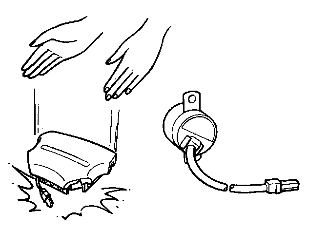

General Precautions
General Precautions.
- Carefully inspect any SRS part before you install it. Do not install any part that shows signs of being dropped or improperly handled, such as dents, cracks or deformation:
- Airbag assembly (driver's and front passenger's).
- Dash sensors.
- Cable reel.
- SRS unit.
- Seat belt pretensioner (driver's and front passenger's)

- Use only a digital multimeter (KS-AHM- 32-003) to check the system. Using an analog circuit tester may cause an accidental deployment and possible injury.
- Do not install used SRS parts from another car. When repairing, use only new SRS parts.
- Except when performing electrical inspections, always disconnect both the negative cable and positive cable at the battery before beginning work.
- Replacement of the combination light, wiper/washer switches, and cruise control switch can be done without removing the steering wheel - see appropriate service procedure.
- The L and LS models have a stereo radio/cassette player with a 5-digit coded theft protection circuit. Be sure you get the code number before disconnecting the battery cable.